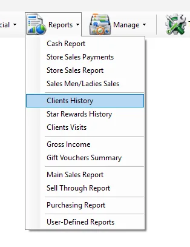
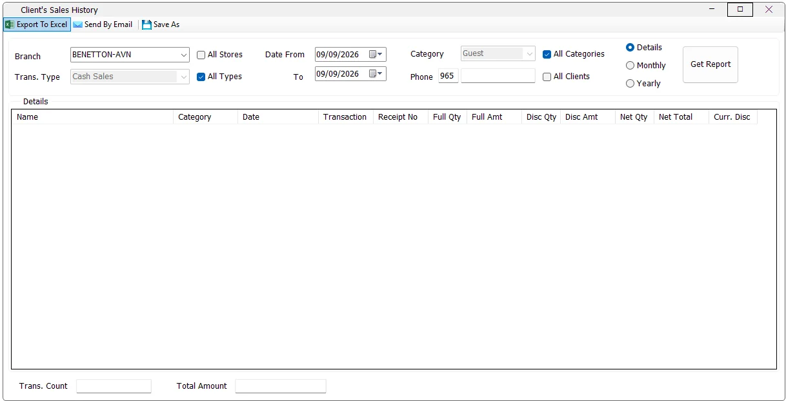

Customer service
Find a client's receipts
Enter the client's phone number, use Details, select the required dates and click Get Report.
Clients History shows the sales and returns associated with IMS customers. It can be used to investigate one client by phone number or, when permitted, analyze all clients. Results can be shown receipt by receipt, summarized by month, or summarized by year.


| Criteria | What it does |
|---|---|
| Branch | Limits the report to one store available to the logged-in user. |
| All Stores | Includes all stores currently available to the user. When selected, the Store column is shown in the result. |
| Trans. Type | Choose Cash Sales or Credit Sales when All Types is cleared. |
| All Types | Includes cash sales, credit sales and their corresponding returns. |
| Date From / To | Includes transactions from the start of Date From through the end of the To date. |
| Category | Limits the report to one customer category when All Categories is cleared. |
| All Categories | Includes every customer category and shows the Category column in the result. |
| Phone | Searches for one client using the configured country code plus the entered phone number. Only digits are accepted. |
| All Clients | Runs the report for all matching clients instead of one phone number. The Phone column is displayed when this option is used. |
IMS keeps returns in the client's history so that the result represents the customer's real net activity. Cash Sales includes cash sales and cash returns; Credit Sales includes credit sales and credit returns; All Types includes all four transaction types.
Return quantities and amounts can therefore appear as negative values and reduce the report's Net Qty, Net Total and Total Amount.
Details is the default view. Each matching receipt is shown separately. The Date column contains the transaction date/time and the report also displays Transaction and Receipt No.
The bottom Trans. Count displays the number of detailed rows found, while Total Amount adds the Net Total of the matching transactions.
Monthly consolidates the customer's transactions by month and year. Individual Transaction and Receipt No. columns are hidden because the report is showing summarized activity instead of individual receipts.
If All Stores is selected, Store remains part of the grouping so the monthly history can still be separated by store.
Yearly works like Monthly but consolidates results by calendar year. Transaction and Receipt No. are hidden, while customer, category, store (when applicable), quantities, amounts and current discount remain available.
| Column | Meaning |
|---|---|
| Name | Customer name available from the IMS customer or loyalty record. |
| Phone | Customer phone number. Shown when All Clients is selected. |
| Category | Customer category. Shown when All Categories is selected. |
| Store | Store where the transaction occurred. Shown when All Stores is selected. |
| Date / Month / Year | Individual transaction date in Details, or the selected summary period in Monthly/Yearly. |
| Transaction | Transaction type, such as sale or return. Details view only. |
| Receipt No | Receipt number. Details view only. |
| Full Qty | Quantity recorded at full price. |
| Full Amt | Amount recorded at full price. |
| Disc Qty | Quantity recorded with discount. |
| Disc Amt | Amount recorded for discounted quantity. |
| Net Qty | Full Qty + Disc Qty, including the effect of returns. |
| Net Total | Full Amt + Disc Amt, including the effect of returns. |
| Curr. Disc | The customer's current discount ratio shown as a percentage. |
If a specific client is required but no phone number has been entered, IMS displays “Enter client's phone No.”. If the criteria are valid but nothing matches, IMS reports that no matching data was found.
While a long report is loading, IMS disables the criteria, displays progress and provides a Cancel action. Cancelling clears the partial result and returns control to the criteria panel.
Export To Excel exports the generated grid. Send By Email sends the generated Clients History report with the selected date range in the subject. Save As is available with Excel-export permission and requires a generated report.
The Clients History menu is controlled by the IMS view client history permission. The same report permission also controls access to Clients Visits. The ability to select All Clients is controlled separately by the view all clients permission.
Export to Excel and Send By Email are also controlled independently by their standard IMS report-output permissions.
Enter the client's phone number, use Details, select the required dates and click Get Report.
Keep All Types selected to see both sale and return activity and the resulting net totals.
Use Monthly or Yearly to summarize the client's history without showing every individual receipt.
Users with the required access can select All Stores and All Clients to include the Store and Phone dimensions in the report.